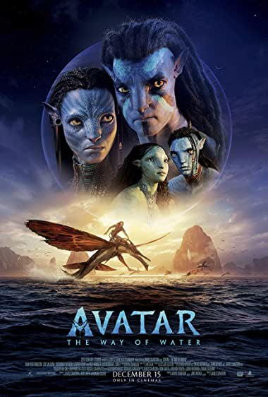

Avatar: The Way Of Water
Jake Sully lives with his newfound family formed on the extrasolar
moon Pandora. Once a familiar threat returns to finish what was
previously started, Jake must work with Neytiri and the army of the
Na'vi race to protect their home. Several years after the Na'vi
repelled the RDA invasion Jake Sully and his family are living on
Pandora. Things seem peaceful but the RDA has other plans, invading
and capturing Pandora. Sully forms a guerrilla group to try to expel
the invaders.
Several years after the Na'vi repelled the RDA invasion Jake Sully and his family are living on Pandora. Things seem peaceful but the RDA has other plans, invading and capturing Pandora. Sully forms a guerrilla group to try to expel the invaders.